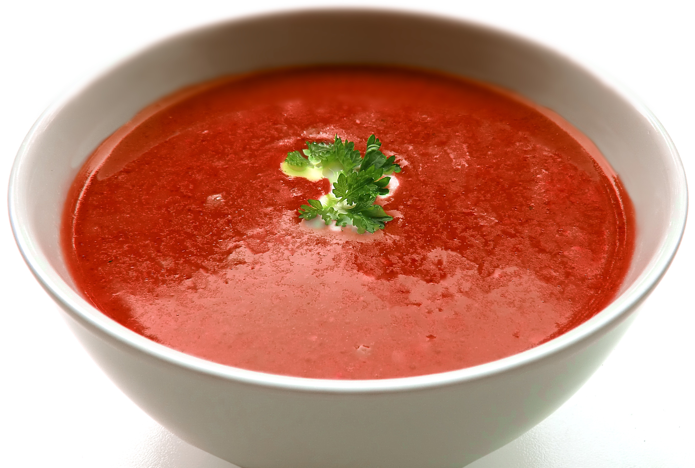

Tomatensoep
De tomatensoep is een prima en makkelijk te maken voorgerecht.
Ingrediënten
- 1 kilo verse smaakvolle tomaten
- 2 uien
- 1 kleine aardappel
- 3 teentjes knoflook
- 1 winterpeen
- 1 prei
- 1/4 witte kool
- 1 liter water
- 1 bouillonblokje groenten
- 250 gram rundergehaktballetjes
- verse peterselie
- peper
- zout
- olie om te bakken
Bereidingswijze
- Schil en snipper de uien. Maak de knoflook schoon. Snij de tomaten in kwarten en verwijder de witte harde stukjes. Schil de aardappel en snij in grove stukken.
- Schrap de peen en snij heel fijn. Maak de prei schoon en snij in fijne ringen. Verwijder het buitenste blad van de kool en snij daarna in dunne reepjes.
- Verwarm wat olie in een grote soeppan en fruit hier de ui in aan. Pers de knoflook uit boven de pan en bak kort mee. Doe daarna de verse tomaten en de aardappel in de pan, schep goed om en laat zo’n 2 a 3 minuten zachtjes meebakken.
- Schenk 1 lt water in de pan en voeg het bouillonblokje toe. Breng aan de kook en laat zo’n 15-20 minuten pruttelen.
- Gebruik een staafmixer om de tomaten en groenten tot een gladde soep te pureren. In dit recept heb ik niet eerst de tomaten ontveld. Wil je wel een gladde soep, dan kun je deze door de zeef halen.
- Zet de pan met tomatensoep weer op het vuur en voeg hier de fijngesneden wortel, prei en kool aan toe. Ook kunnen de rundergehaktballetjes nu in de pan. Breng de soep weer zachtjes aan de kook en laat 10 minuten zachtjes koken.
- Breng de verse tomatensoep op smaak met peper, zout en verse peterselie.

Tip Serveer met een lekker broodje.